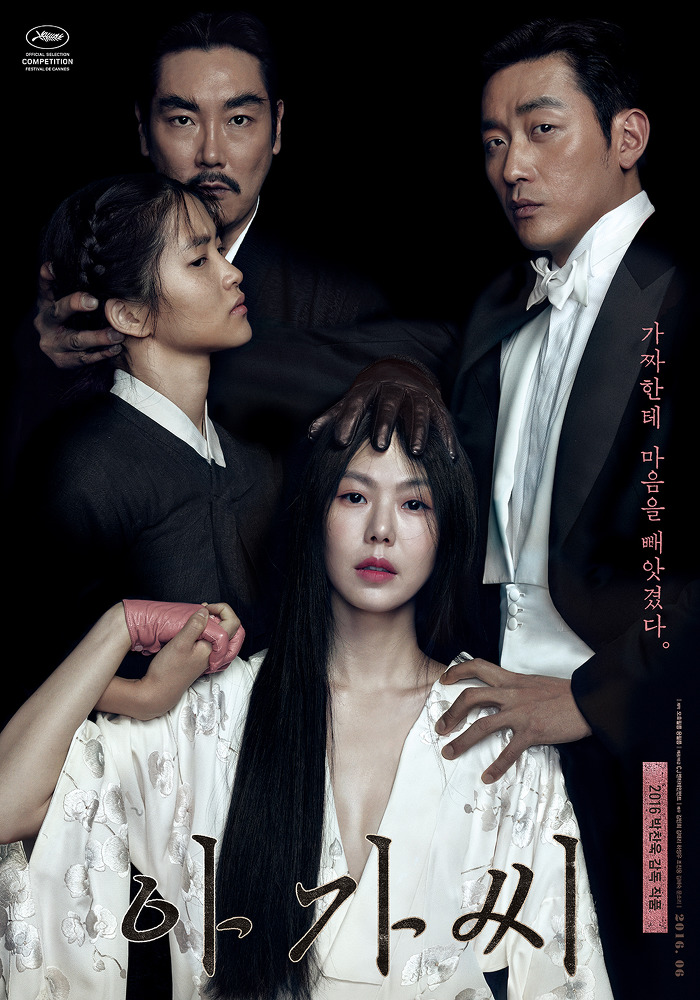

Handmaiden
Park Sang-joon
In Japanese-occupied Korea, a conman operating under the sobriquet of "Count Fujiwara" plans to seduce a Japanese heiress named Lady Hideko, then marry her and commit her to an asylum in order to steal her inheritance. He hires a pickpocket named Sook-hee from a family of con artists to become Hideko's maid and encourage Hideko to marry him.
Hideko lives with her authoritarian Uncle Kouzuki. Kouzuki makes money by selling rare books, and he has Hideko give readings of the books for potential buyers. Sook-hee and Hideko grow closer, and Hideko allows Sook-hee to wear her dresses and jewelry. When Hideko asks Sook-hee what married life will be like, Sook-hee makes passionate love to her, promising her the same pleasures with her new husband. Sook-hee begins expressing reluctance about the plan, but when Hideko herself feels that she cannot go through with the marriage, Sook-hee insists she do so, causing Hideko to slap her and run away in frustration.
When Kouzuki leaves on business for a week, Hideko and Fujiwara elope. After cashing out Hideko's inheritance, it is then revealed that Hideko and Fujiwara double crossed Sook-hee and has convinced the asylum that she is the "Countess," and have her committed in Hideko's stead.
The Korean version